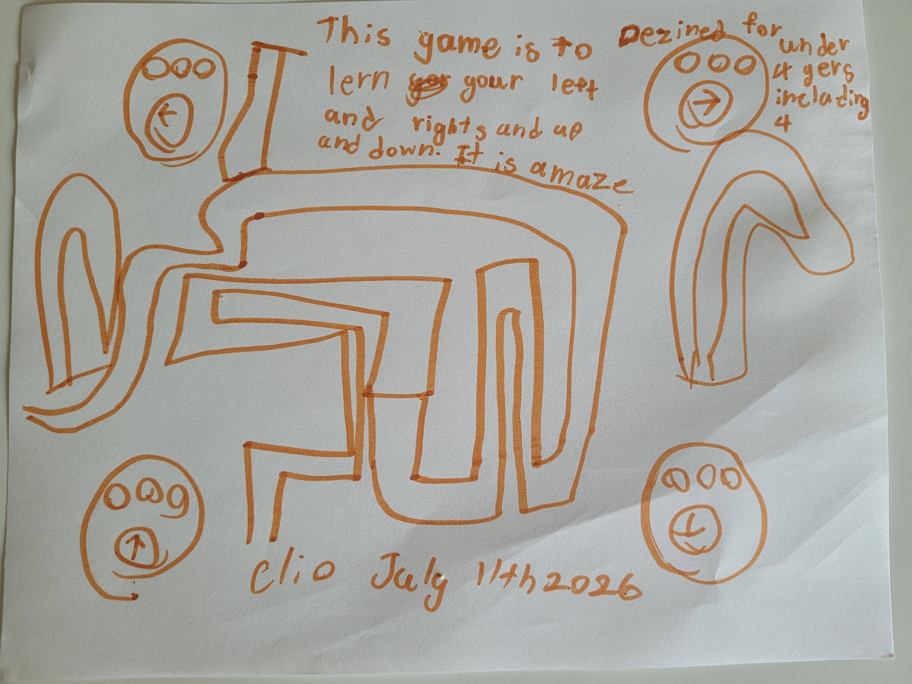

Clio Design
这里是用户名字页面。下一步进入游戏列表，选择具体游戏开始体验。
当前已接入 5 个可玩游戏：Sorting Workshop（分拣工坊）、Prediction Workshop（预测工坊）、Word Match（连线组词）、Find It（寻找游戏）、Bunny Direction Maze（兔兔方向迷宫）。
Design Insight

我们保留了她的核心想法，并将它实现为一个可以真正体验的小游戏。设计重点是把“观察”与“预测”拆开，让孩子先看到规律，再进行判断练习，避免把两种认知能力混成同一类统计。
Design Draft 2

评语：第二稿最好的地方是“规则动作单一而明确”，孩子只需要聚焦“连正确关系”，认知负担更可控。后续优化方向是继续保持词义关系的明确性，避免引入边界模糊的词对。
Design Draft 3

评语：Clio 这次提出的改进建议非常棒。她把“目标可重复出现、不给具体数量、持续找对为止”明确成规则，让玩法更像真实探索任务。这个改动既保留了自由感，又显著提升了专注训练价值，非常适合 Creative Studio 的轻量可玩版本。
Design Draft 4

交互定义：🐰➡️ 向右、🐰⬅️ 向左、🐰⬆️ 向上、🐰⬇️ 向下。玩家点击四只兔子来控制迷宫中的移动方向，相当于把传统 ↑ ↓ ← → 变成儿童更自然的角色化控制。相比前三稿，这一稿最大的进步是从“游戏里有什么”转向“玩家如何控制”，这是非常关键的游戏交互思维。
Team Celebration (July 4–5, 2026)
Dear Clio, We did an amazing job together! In just two days, our team: - Created 3 new game ideas. - Built 4 working games. - Finished the first Creative Studio project. - Updated the MindsEvo website. That is a wonderful achievement! You shared your ideas clearly and helped us make every game better. You were not only a player-you were a game designer. This is an important milestone for MindsEvo. It is also the beginning of your own creative journey. We are very proud of you. Let's keep imagining, creating, and building together! ❤️ The MindsEvo Team
The MindsEvo Team